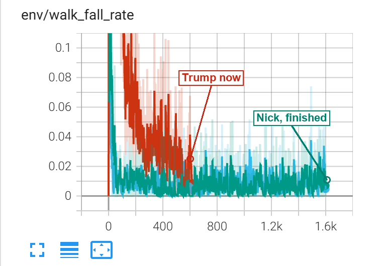
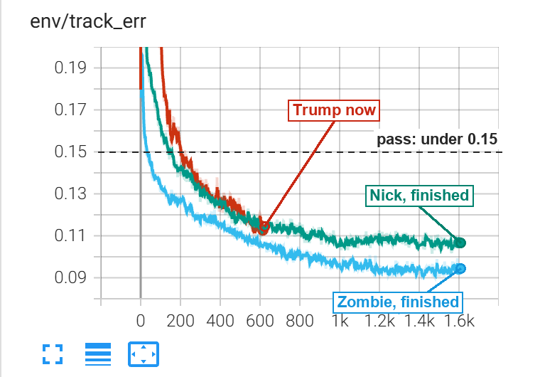
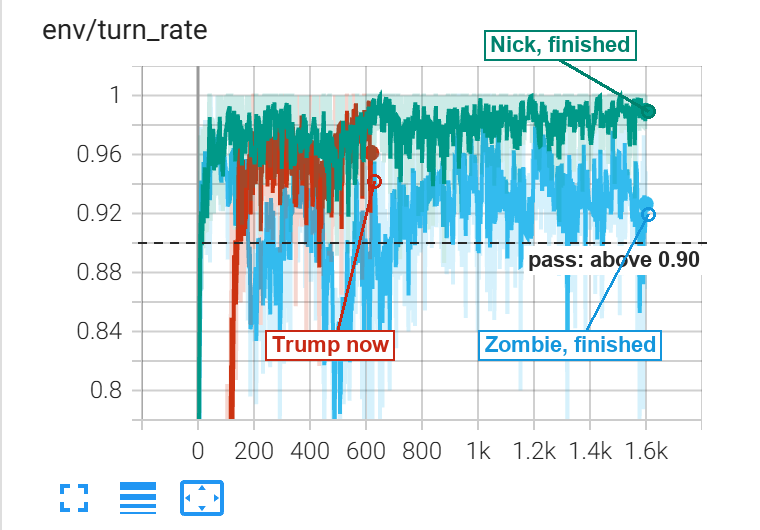

What each boxer can do
3 October 2026, updated 18:30 · six boxers, nine behaviours · exam results in plain C MuJoCo with no random wobble, for every cell
The grid
The thin bar in each cell is how good the boxer is at that behaviour, from worst (empty) to best (full). Grandma and Grandpa are marked against easier targets for punching speed and getting up, because their bodies are built weaker and slower.
How far up the ladder each boxer is
One block per behaviour, in the grid's order.
What is still wrong, in plain words
- Matt, Grandma, Grandpa: wobbly after getting up. They get off the floor nearly every time, but when the fighting brain takes the body back from the getting-up brain, they fall again in up to 1 try in 4. Nick's second round of practice fixed exactly this, so the same practice is queued for the others.
- Grandpa: falls without being hit. About twice a minute against his worst opponent. Matt and Nick had the same problem and a second round fixed it; his second round has not run yet.
- Matt never blocks. He passes the guard test only because opponents rarely reach his head. All his own punches go to the body.
- Trump cannot reach three opponents. He lands 1.3 punches a second on Zombie and 0.4 on Nick, who come to him, and almost none on Matt, Grandma and Grandpa. His arms are the shortest in the roster (0.44 m shoulder to wrist; the others 0.48 to 0.54). He is also the first boxer whose muscles slow down and tire like a person's.
Trump's first lesson (stand, walk, turn): three charts
Run f_trump2, pictured about 650 of 1,600 rounds in; it finished and passed its exam (stand 100%, walk off by 0.02 m/s, turn 100%). Red is Trump. Green is Nick and blue is Zombie, who finished the same lesson yesterday.
1. Falls while walking

- Toddler
- The line going down means Trump falls over less. Down is good!
- Child
- At first every walk ended on the floor. Now about 2 to 4 walks in 100 do. Nick and Zombie ended near 1 in 100.
- Adult
- Share of walking episodes ending in a fall, with exploration noise, shoves and thrown cubes. Trump 1.00 at the start, 0.02 to 0.04 now; Nick and Zombie finished near 0.01.
2. Walking at the asked speed

- Toddler
- We tell Trump how fast to walk. The line shows how wrong he gets it. Lower is better.
- Child
- If we ask for 1 metre a second and he does 0.89, he is off by 0.11. The dotted line is the pass mark and he is under it.
- Adult
- Mean error between commanded and actual velocity. Trump 0.11 m/s, under the 0.15 mark and level with where Nick finished; Zombie finished at 0.09.
3. Turning to face the opponent

- Toddler
- Someone stands behind Trump. Can he turn to look at them? Higher means more often.
- Child
- He has three seconds to turn and face them. He manages it 9 times in 10 or better, but it jumps about from minute to minute.
- Adult
- Share of turn episodes faced within 15 degrees inside 3 s. Trump swings between 0.88 and 1.00; Nick finished near 0.99, Zombie near 0.92. This is the noisiest of the three and the rung Matt and Grandma each needed a top-up for.
Sources: training/logs/exam_*.json (footwork: r2b_matt, f_zombie, f_nick, f2_grandma, f_grandpa; boxing: m2 for Matt, Nick and Grandma, the all-boxers exam after round one for Zombie and Grandpa, and the u1 get-up exams). Trump: f_trump2, u1_trump2_matt and m6_trump.